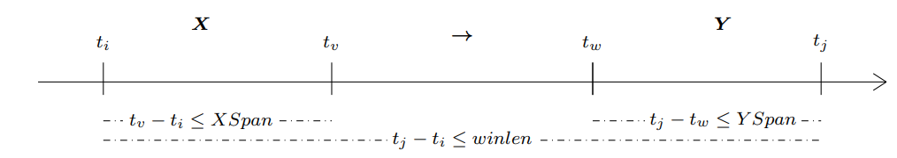
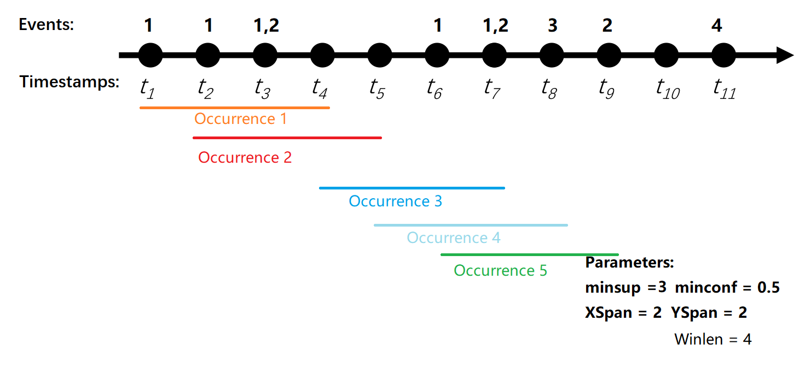

Mining Partially-Ordered Episode Rules in a Complex Sequence using the POERMH algorithms (SPMF documentation)
This example explains how to run the POERMH algorithm using the SPMF open-source data mining library.
How to run this example?
- If you are using the graphical interface, (1) choose the "POERMH" algorithm, (2) select the input file "contextEMMA.txt", (3) set the output file name (e.g. "output.txt") (4) set the minimum support to 3, XSpan = 2, YSpan = 2, the minimum confidence to 0.5 (which means 50%), the Winlen to 4, and set "Without timestamps?" to false, and then (5) click "Run algorithm".
- If you want to execute this example from the command line,
then execute this command:
java -jar spmf.jar run POERMH contextEMMA.txt output.txt 3 2 2 0.5 4 false in a folder containing spmf.jar and the example input file contextEMMA.txt. - If you are using the source code version of SPMF, launch
the file "MainTestPOERMH.java"in the package ca.pfv.SPMF.tests.
What is POERMH?
POERMH (Fournier-Viger, P., Chen, Y. et al., 2021) is an algorithm for discovering partially-ordered episode rules in a complex event sequence. In simple words, the algorithm is used to analyze a sequence of symbols or events that can have timestamps or not. The output is some rules of the form X-->Y indicating that if some event(s) or symbol(s) X appear in the sequence, they will be followed by some other event(s) or symbol(s) Y. Finding such rule is useful to discover some sequential or temporal relationships in a sequence. For example, it can be used to analyze the purchase behavior of a customer (a sequence of purchases), or it could be used to find relationships between some words in a text (a sequence of words).
Various algorithms have been proposed to find episode rules. POERMH is a recent algorithm that is designed to find a specific type of rules called "partially ordered" episode rules. Partially ordered means that these rules are not totally ordered. In a rule X --> Y, we just require that symbols in X appear before those in Y but there is not order requirement between the events in X, or between the events in Y. It was argued that these rules are more general than the traditional episode rules used in previous papers.
A few algorithms were proposed for mining partially-ordered episode rules such as POERM, POERMH and POERM-ALL. The key differences between these algorithms are how they count the occurrences of rules.. POERM and POERM-ALL count the support (occurrence frequency) of a rule using the non-overlapping support, while POERMH uses the head support. Both definitions of support can have some advantages and limitations but it was shown in the DAWAK 2021 paper about POERMH that using the head support can be more useful for tasks such as sequence prediction.
What is the input?
The algorithm takes as input an event sequence with a minimum support threshold, a mininum confidence threshold, some constraints on rules to be found called XSpan, YSpan, Winlean and a boolean parameter without_timestamp? (self-increment), that must be set to true if the input dataset has no timestamps or otherwise false. Let’s consider following sequence consisting of 11 time points (t1, t2, …, t10) and 4 events type (1, 2, 3, 4). This database is provided in the text file "contextEMMA.txt" in the package ca.pfv.spmf.tests of the SPMF distribution.
Time points |
Itemset (event set) |
1 |
1 |
2 |
1 |
3 |
1 2 |
6 |
1 |
7 |
1 2 |
8 |
3 |
9 |
2 |
11 |
4 |
Each line of the sequence is called an event set and consists of:
- a time point (first column)
- an event set (second column)
For example, in the above example, at time point 1, the event 1 occurred. Then at time point 2, the event 1 occurred again. Then at time point 3, the events 1 and 2 occurred simultaneously. And so on.
To make it easier to understand, we could also represent the above sequence visually like this:

It is possible to apply the POERM, POERMH and POERM algorithms on dataset that have no timestamps. In that case, it will be assumed that timestamps are 1,2,3,4...
What is the output?
The output of POERMH is the set of partially-ordered episode rules having a head support (occurrence frequency) that is no less than a minSup threshold (a positive integer) set by the user, a confidence that is no less than a minimum confidence threshold (a double number representing a percentage), and that meet some constraints XSpan, YSpan and XYSpan.
A rule is denoted as X --> Y and it is a relationship between two sets of events X and Y. The intuitive meaning of a rule X--> Y is that if all events from X appear in any order in a sequence, they will be followed by all events from Y. To avoid finding rules containing events that are too far appart, the algorithm allows to specify three constraints: (1) events from X must appear whithin some maximum amount of time XSpan ∈ Z+, (2) events from Y must appear whithin some maximum amount of time YSpan ∈ Z+, and (3) the event from X must appear before those of Y in a maximum amount of time Winlen ∈ Z+. The three constraints XSpan, YSpan and Winlen are parameters of the algorithm , and are illustrated in the figure below for a rule X → Y .

The head support of a rule X-->Y means how many times the rule appeared in the input sequence (how many times X was followed by Y, and respected the three time constraints). For example, if a rule appears three times, we will say that it has three occurrences. Each occurrence of a rule can be denoted by a time interval [ti, tj] indicating a start time ti and an end time tj. The head support of a rule is the number of time intervals that have distinct start time and contain the rule (and respect the three time constraints).
The confidence of a rule X-->Y means how many times X-->Y appeared in the input sequence, divided by how many times X appeared in the input sequence. Thus, you can think about the confidence about the conditional probability P(Y|X), that is how likely it is that Y will follow X in the sequence. The confidence is expressed as a percentage. For example, a confidence of 50% means that 50% of the times X was followed by Y in the input sequence.
The output of the algorithm is all the episode rules that (1) have a confidence greater or equal to the minConf parameter, and (2) a support greater or equal to the minSup parameter, given the three time constraints.
Now, let's look at the result for the above example. Three rules are found:
Episode rules |
Support | Confidence |
1 --> 1 |
5 | 0.8 (which means 80%) |
1 --> 1 2 |
5 | 0.6 (which means 60%) |
1 -> 2 |
5 | 0.8 (which means 80%) |
| 1 2 -> 2 | 4 | 0.5 (which means 50%) |
For instance, the second episode rule {1} --> {1,2] ( indicating that event 1 is followed by event 1 and 2) has a support of 5 and a confidence of 60%. The five occurrences of this rule are illustrated in the picture below:

Since the rule appears five times, the support is five. Moreover, it can be observed that there are some occurrences of X = {1} (for example at time t7) that are not followed by Y={1,2} . This is the reason why the confidence of that rule is not 100% but it is instead 60%.
Input file format
The input file format of that algorithm is a text file. An item (event) is represented by a positive integer. A transaction (event set) is a line in the text file. In each line (event set), items are separated by a single space. It is assumed that all items (events) within a same transaction line) are sorted according to a total order (e.g. ascending order) and that no item can appear twice within the same event set. Each line is optionally followed by the character "|" and then the timestamp of the event set (line). Note that it is possible to run the algorithms on a database that has no timestamps. In that case, the boolean parameter "without timestamps (self-increment)" should be set to true to indicate that the dataset has no timestamps. If there is no timestamps and the parameter is set to true, the algorithm will assume that each line has a timestamp that is increasing by 1.
In the previous example, the input file is defined as follows. The two first lines are metadata indicating the type of file and the source of the data.
@FILETYPE="Transaction database with timestamps"
@SOURCE="SPMF SOFTWARE https://philippe-fournier-viger.com/spmf/"
1|1
1|2
1 2|3
1|6
1 2|7
3|8
2|9
4|11
Output file format
The output file format is defined as follows. It is a text file. Each line is a partially episode rule. Each event in a partially episode rule is a positive integer On each line, the items from the rule antecedent are first listed, separated by single spaces. Then the keyword "==>" appears, followed by the items from the rule consequent, separated by single spaces. Then, the keyword "#SUP:" appears followed by an integer indicating the support of the rule as a number of sequences. Then, the keyword "#CONF:" appears followed by a double values in the [0, 1] interval indicating the confidence of the rule (e.g. 0.5 means 50%). The output for the example is:
@FILETYPE="Frequent episode rules"@SOURCE="SPMF SOFTWARE https://philippe-fournier-viger.com/spmf/"
1 ==> 1 #SUP: 5 #CONF: 0,8
1 ==> 1 2 #SUP: 5 #CONF: 0,6
1 ==> 2 #SUP: 5 #CONF: 0,8
1 2 ==> 2 #SUP: 4 #CONF: 0,5
The first two lines are metadata indicating the type of patterns in this file and the source of the data. Then the following lines provide the list of patterns. Consider the second line. It indicates that the rule {1, 2} ==> {1} has a support of 5 (it has five occurrences in the input sequence) and that the confidence of this rule is 60%. The next lines follow the same format
Performance
POERMH is the first algorithm for mining partially-ordered episode rules using the head support. This is the original implementation
Where can I get more information about the POERMHL algorithms?
The POERMH algorithm are described in this article:
Chen, Y., Fournier-Viger, P., Nouioua, F., Wu, Y. (2021). Mining Partially-Ordered Episode Rules with the Head Support. Proc. 23rd Intern. Conf. on Data Warehousing and Knowledge Discovery (DAWAK 2021), Springer, LNCS, 7 pages
DOI: https://doi.org/10.1007/978-3-030-86534-4_26 [ppt] [video]